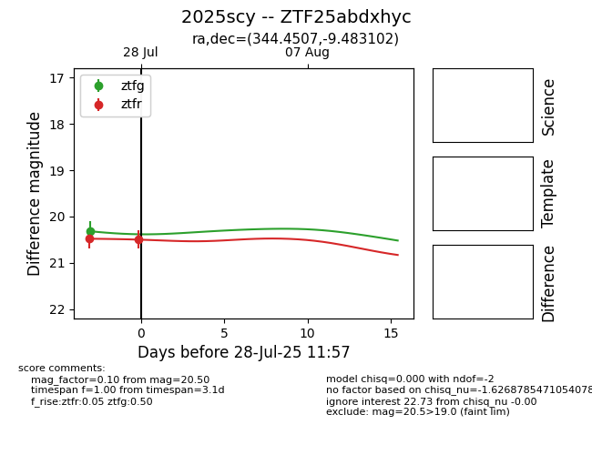

Target 2025scy at 2025-07-28 11:57, see:
FINK: fink-portal.org/2025scy
Lasair: lasair-ztf.lsst.ac.uk/objects/2025scy
ALeRCE: alerce.online/object/2025scy
TNS: wis-tns.org/object/2025scy
YSE: ziggy.ucolick.org/yse/transient_detail/2025scy
alt names
ZTF25abdxhyc (ztf,fink)
2025scy (tns,yse)
coordinates:
equatorial (ra, dec) = (344.4507,-9.48310)
galactic (l, b) = (60.8797,-57.91278)
photometry
last ztfg=20.32, ztfr=20.50
1 ztfg, 2 ztfr detections
